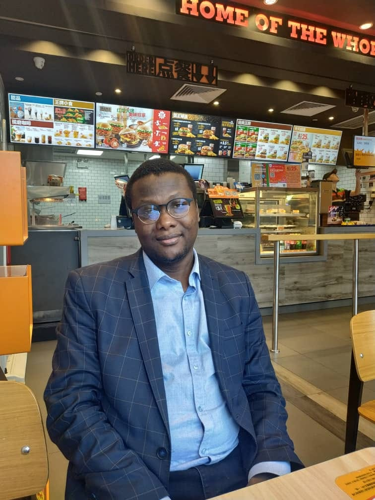

SUMMARY
“Results-driven Tech Solution Architect with extensive experience in transforming clients’ talents, skills, and ideas into profitable online businesses, including freelancing opportunities and digital startups. Proficient in full-stack web development and ODM/OEM solutions, I engage in mentoring as a freelancing career counselor and instructor, empowering individuals to succeed in the digital economy. Additionally, I have carved a niche in job creation solutions through technology, leveraging innovative strategies to support and enhance employment opportunities in the tech sector.”
EDUCATION
Higher Diploma in Software Engineering (HDSE)
- School: APTECH
- Year: 2007 - 2008
Advanced Disploma In Software Engineering (ADSE)
- School: APTECH
- Year: 2008 - 2009
WORK EXPERIENCE
ORGANIZATION: Economic and Financial Crimes Commission (EFCC)
- Position: Cybercrime Investigation Officer
- Year: 2010 - 2013
COMPANY: Martexpress Limited (Payment gateway services)
- Position: Co-founder/CEO
- Year: 2011 - 2015
COMPANY: Regsila Limited (Software Development Services)
- Position: Co-founder/CEO
- Year: 2016 - 2019
COMPANY: Timeterest Limited (Multi-Web Services company)
- Position: Co-founder/CEO
- Year: 2024 - till date
SKILLS
FULL-STACK WEB DEVELOPMENT
- HTML, CSS, Javascript, Node, React, PostgreSQL, Web3 and DApps
- Cyber Security Investigation
- Freelancing Career Counseling, Intructor and Mentor
- Electronic Product Creation and OEM Branding
My Hobbies
Contact Me